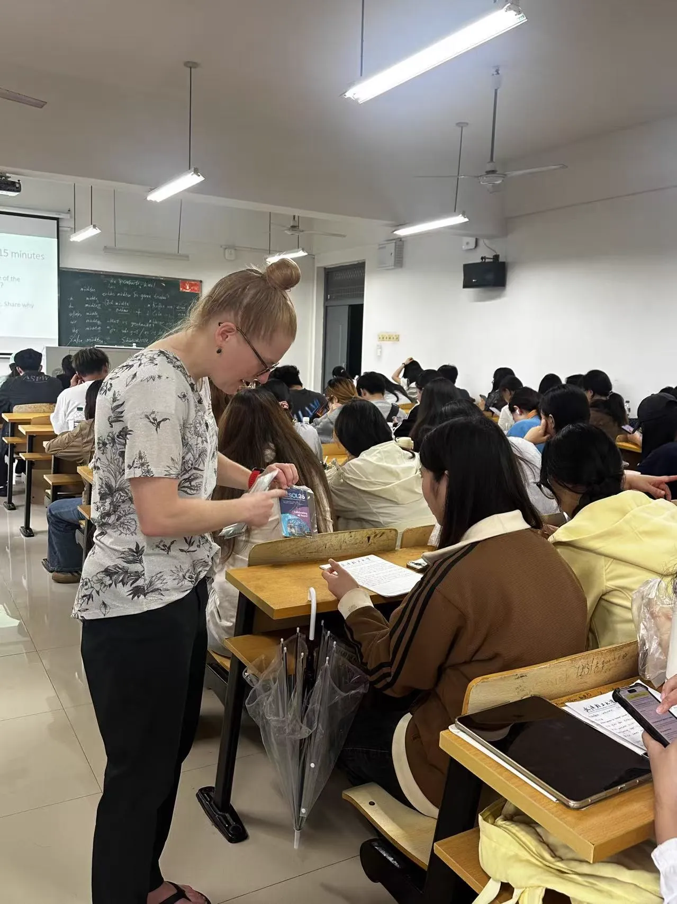
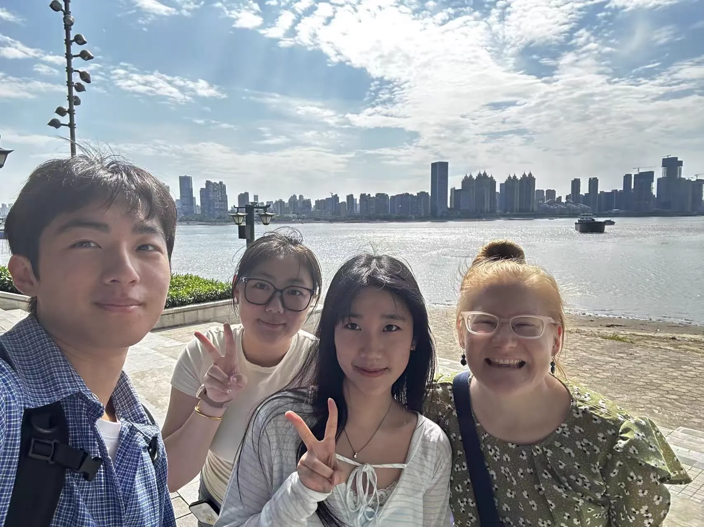

Teaching Assistant
Southern Utah University · Internship
Classroom and course support for English writing courses serving 200+ students in Wuhan.
Role & Context
I was a teaching assistant for Southern Utah University's English writing program in Wuhan, run in partnership with Wuhan Polytechnic University. An SUU professor led intensive writing courses for 200+ students in five classes across two majors, advertising and construction management. I supported the classroom and ran the course operations.
Classroom Support
I provided bilingual support and interpreted between the professor and the students. I helped students understand the professor, and I helped the professor understand how teaching and communication work in a Chinese classroom. Since students' English ranged widely, I adjusted my explanations and feedback to each level.
Course Operations
I managed attendance, graded assignments against the professor's rubric (spelling, structure, grammar, logic), gave written feedback, and built the final-grade spreadsheets and course-completion reports in Excel myself.
Cultural Bridge
The professor was visiting China for the first time. I helped close the distance that unfamiliarity can create: I taught her to use Alipay for the subway, took her to try local food, visited the Yellow Crane Tower together, and planned a trip to Mount Lu. What I took away: communication depends less on perfect understanding than on an open, attentive, responsive attitude.
In the Classroom
{kind=link}

{kind=link}
